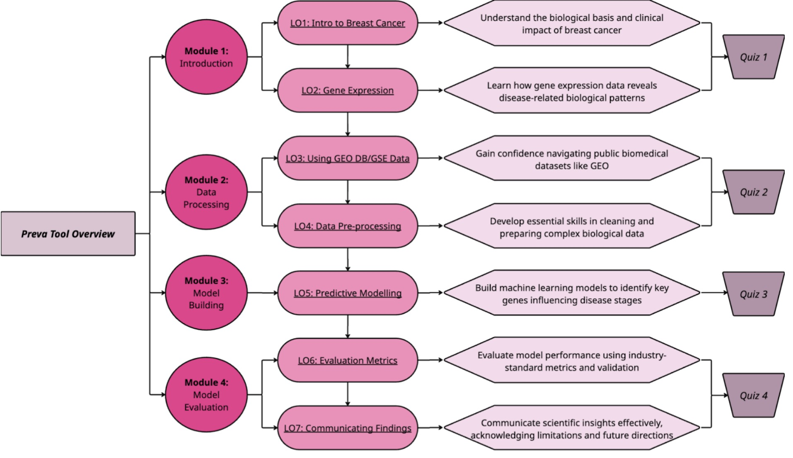
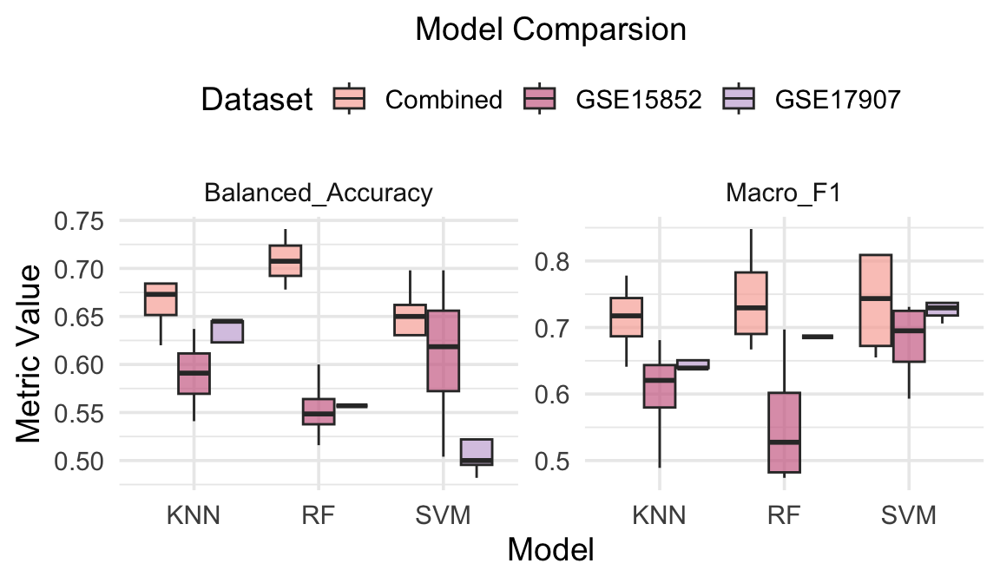
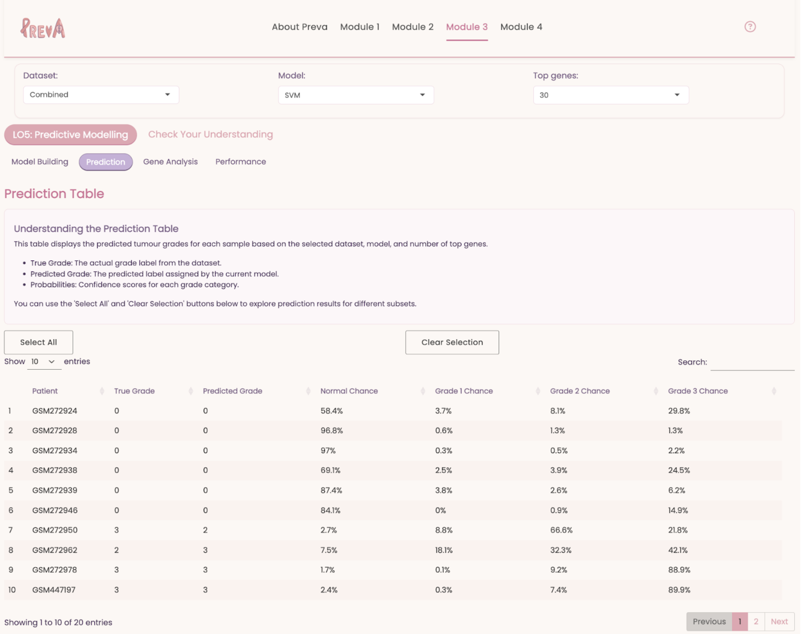

Code
knitr::include_graphics("figure1.png")


Devanshi, Dorothea, Harry, Tommi and Hamish
Modern biomedical research generates vast volumes of genomic data, yet for many students, especially those at the start of their research journey—the path from raw gene expression profiles to clinically actionable insights remains unclear. While theoretical frameworks are covered in coursework, few resources offer guided, hands-on exposure to real-world biomedical datasets. Preva addresses this gap by providing an interactive EdTech tool designed specifically for Honours-level students entering the field of biomedical data science or precision medicine.
Developed using R Shiny, Preva walks users through the complete data science workflow: from understanding the biological foundations of breast cancer to pre-processing high-dimensional gene expression data and building classification models. It introduces students to key concepts in cancer pathology and gene regulation before guiding them through practical techniques such as data transformation, variable selection, and model development using algorithms like support vector machines (SVM), k-nearest neighbours (KNN), and random forests (RF).
The tool uses real-world datasets labeled by tumor grade, an ordinal clinical variable often used to assess disease severity and progression. This structure allows students to build and evaluate models aligned with how risk is communicated in clinical settings. Robust performance metrics such as balanced accuracy, F1-score, Kappa, and specificity help students assess their models in the face of class imbalance, a common issue in medical data.
Importantly, Preva was designed with accessibility in mind. It assumes minimal coding experience and is tailored for students who are curious about how genomics intersects with machine learning, but may lack confidence in programming or statistical modeling. Through interactive visualisations, scaffolded guidance, quizzes, and reflective prompts, students gain not only technical skills but also critical thinking abilities around model interpretability and translational challenges.
By offering an approachable yet rigorous learning experience, Preva transforms passive instruction into active discovery. It is a modular, scalable resource that enables Honours students to develop foundational competencies in biomedical modeling—and empowers them to take their first steps into the world of data-driven healthcare.
knitr::include_graphics("figure1.png")Breast cancer is the most commonly diagnosed cancer among Australian women, with over 21,000 new cases projected in 2024—approximately 1 in 7 women will be diagnosed in their lifetime (National Breast Cancer Foundation, 2024). While most diagnoses occur in women over 50, more than 1,000 cases were reported among women under 40 in 2023 (Breast Cancer Network Australia, 2023). Early detection remains a key factor in survival: when diagnosed at a localized stage, the five-year survival rate is 99%, compared to just 27% when cancer has spread (Medshun, 2023).
Advances in genomics and high-throughput technologies, such as microarrays and RNA sequencing, have opened new frontiers in disease prediction by enabling researchers to profile gene expression on a molecular level. These datasets are high-dimensional, often containing thousands of variables and only a limited number of samples. While statistically challenging, they hold tremendous potential to uncover biological signals that traditional imaging or self-reported data may overlook. Predictive models trained on gene expression data could help flag risk long before physical symptoms appear—providing powerful support for early intervention and personalized care.
Yet despite its promise, the field of genomic modeling remains inaccessible to many students, especially those who are new to coding or unsure how to apply data science concepts to real-world biological problems. This disconnect is particularly pronounced at the Honours level, where students often encounter complex datasets for the first time without sufficient scaffolding.
Preva was created to serve as a first point of contact for these students—offering an approachable, guided introduction to the practice of building cancer risk models using real gene expression data. It challenges students to grapple with the inherent messiness of biomedical data while introducing best practices like data transformation, variable selection with limma, and modeling for ordinal outcomes.
By simulating the full data science workflow in an educational setting, Preva empowers students to engage deeply with the iterative and interpretive aspects of biomedical modeling. Designed for senior undergraduates and early Honours students in biomedical or data science programs, Preva equips learners with the foundational skills and confidence they need to bridge the gap between theory and practice, and to make meaningful contributions to data-driven healthcare.
Data was sourced using two primary methods: directly from the NCBI GEO database and through targeted searches using Google and Google Scholar. On the NCBI website, we explored the GEO Datasets portal using the keywords “breast cancer,” filtered by study type “Expression profiling by array” and organism “Homo sapiens.” Additionally, we performed broader web searches using terms such as “breast cancer dataset” to discover relevant studies hosted on GEO. This approach led us to three datasets: GSE15852, which was identified through the NCBI search, and GSE17907 and GSE10810, both of which were found via Google. The latter two were later merged to form a combined dataset.
After loading the data we explored the phenotype and expression data. We determined which columns represented the cancer grade, the distribution of grades in each dataset and whether there were NA values. Principal Component Analysis (PCA) was used to introduce students to unsupervised exploratory analysis and visualisation.
In the pipeline, PCA was applied to:
Detect and visualise sample clusters by grade or dataset
Identify batch effects and the need for log transformation (e.g., GSE15852
Plots from the PCA and other portions of EDA feature in Preva to assist the learning process.
We selected GSE15852, GSE17907, and a merged dataset (GSE17907 & GSE10810) for use in Preva. GSE10810 was excluded as a standalone dataset due to its low number of Grade 1 samples, which limited predictive performance and added little value.
Each selected dataset was imported using the GEOquery package, and the phenotype data was cleaned and standardized—particularly the grade labels—to ensure consistency, especially for merging datasets. Cleaned phenotype and gene expression data were then extracted. From the phenotype data, only sample name, grade, and source dataset were retained to form a simplified “metadata” file, while the expression data was compiled into a “merged_expr” dataset.
We removed samples without grade labels, as they offered no predictive value, and genes with NA values, due to incomplete expression profiles. Lowly expressed genes were filtered out to reduce noise, improve statistical power, and retain biological relevance.
Processing varied slightly across datasets. For GSE15852, a log(x + 1) transformation was applied after PCA analysis showed the data was not already log-transformed, unlike GSE17907 and GSE10810. For the combined dataset, batch correction was performed to account for technical variation introduced by merging studies, helping isolate true biological signals.
All datasets were then split into 80% training and 20% testing sets. The testing sets were kept separate for final validation, while training sets were used for model development. SMOTE re-sampling was applied only to the combined dataset to synthetically increase the number of Grade 1 samples and balance the class distribution. It was not used on GSE15852 or GSE17907 alone, as their small Grade 1 sample sizes could lead to unreliable synthetic data or over-fitting.
These dataset-specific pre-processing steps ensured that each input was appropriately cleaned, balanced, and ready for robust modeling within Preva.
knitr::include_graphics("figure2.png")To introduce students to real-world feature selection, we used the limma package to perform differential expression analysis, retaining genes with an adjusted p-value < 0.05. From these, we created input sets of the top 30, 50, 80, and 110 genes for model training. This allows students to observe how feature count impacts model performance and prompts discussion on biological relevance.
After performing feature selection, we evaluated each top gene using three different machine learning algorithms, resulting in twelve distinct model outcomes. For each model, we calculated key performance metrics including accuracy, balanced accuracy, recall, precision, F1 score, sensitivity, and specificity. These metrics were then visualized and compared, with the resulting plots integrated into the Shiny app for interactive exploration. The models used were:
RF is an ensemble method that builds multiple decision trees on random data and feature subsets, combining their outputs via majority voting. It handles high-dimensional gene expression data well and is robust to noise and over-fitting; key for Preva’s small datasets.
SVM finds the optimal hyperplane to separate classes in high-dimensional space. Using kernel tricks like the RBF kernel, it’s able to handle the non-linear relationships common in biological data and performs well with high-dimensional data.
KNN is a simple, non-parametric algorithm that classifies based on the majority class among the k closest data points (using Euclidean distance). Its simplicity and interpretability make it ideal for teaching foundational ML concepts and benchmarking performance.
The Shiny app provides an interactive, browser-based learning experience that makes complex predictive genomics concepts accessible without coding. It is structured into four modules: Module 1 introduces breast cancer and gene expression data; Module 2 covers data processing; Module 3 focuses on model building; and Module 4 guides students through model evaluation. Each module includes clear explanations and a quiz to reinforce key data science concepts related to predictive modeling.
Learner-Centered Design
Clear Learning Alignment
Interactive, Hands-On Learning
Best-Practice Pedagogy
In this study, we systematically evaluated the predictive performance of three machine learning models (SVM, KNN, and RF) on breast cancer grade classification across three datasets (Combined, GSE15852, and GSE17907) and four top-ranked gene sets (30, 50, 80, and 110 genes). The boxplots provide a clear visual comparison of the distribution of Balanced Accuracy and Macro F1 scores for each model across the different datasets.
From the boxplots, it is evident that the Combined dataset consistently outperformed the two individual datasets (GSE15852 and GSE17907) in terms of both Balanced Accuracy and Macro F1. The higher median values of the Combined dataset highlight its overall superior performance.
Focusing on the Combined dataset, the RF model demonstrated the most robust performance across different top gene sets. Notably, when using the top 80 genes, the RF model achieved a Balanced Accuracy of 0.673 and a Macro F1 score of 0.642, showcasing its strong predictive ability for breast cancer grade classification. The SVM and KNN models also exhibited stable performance on the Combined dataset, with Balanced Accuracy values generally exceeding 0.6 across most top-ranked gene sets, indicating good generalization capabilities.
Overall, the Combined dataset provided richer and more comprehensive biological signals, enabling all models—especially the RF classifier—to better differentiate between breast cancer grades.
library(ggplot2)
boxplot_plot <- readRDS("boxplot_plot.rds")
boxplot_plot +
ggtitle("Model Comparsion") +
theme(plot.title = element_text(size = 14, hjust = 0.5)) +
scale_fill_manual(values = c("Combined" = "#F8AFA6",
"GSE17907" = "#c8b0d8",
"GSE15852" = "#d07095"))
knitr::include_graphics("figure4.png")
The results show clear patterns that make sense in a biomedical and data science context. Most notably, the combined dataset consistently performed better across all models. This reflects how integrating datasets can help reduce study-specific bias and make predictions more generalisable—something students can directly observe using Preva.
While RF achieved the best overall scores, it’s not about choosing one “winner.” One important learning point is that different models behave differently across datasets and feature sets. In some cases, SVM actually outperformed RF on GSE15852. KNN struggled with larger gene sets, likely due to its sensitivity to noisy or irrelevant features. These outcomes reflect common challenges in high-dimensional data analysis.
Preva is designed to help students explore these trade-offs for themselves. In Module 4, users can change parameters—like gene set size or model type—and immediately see how performance metrics shift. This interactivity turns abstract ideas into practical knowledge. Instead of just reading that more genes can improve performance “up to a point,” students can test that directly and notice how the gains flatten beyond a certain number of features.
Another key concept Preva helps communicate is the importance of using the right metrics. Accuracy, while intuitive, can be misleading when data is imbalanced. Balanced Accuracy, Macro-F1, and Specificity provide a clearer picture; especially when working with rare but clinically important cases like Grade 1 or Grade 3 tumors. The app doesn’t just display these values; it explains them, so students can learn why each one matters.
Beyond the numbers, Preva also guides students through the full modeling process, from biological context to technical evaluation. The modular layout helps scaffold their learning—Module 1 introduces breast cancer and gene expression, Module 2 handles preprocessing, and so on. Each stage builds on the last, supported by text explanations, quizzes, and visual feedback.
From an EdTech design perspective of the Shiny, Preva integrates multiple best practices. The app is interactive, modular, and explanatory, aligning with guidelines for effective digital learning tools (Backpack Interactive, n.d.; BMC Medical Education, 2024). Instructional design literature stresses the importance of learner agency and feedback, both of which Preva offers through parameter tuning and real-time metric updates (Instructure, n.d.; eLearning Industry, n.d.). Moreover, Preva’s integration of biomedical context ensures the learning remains applied and relevant, a strategy shown to deepen engagement and improve knowledge retention (ScienceDirect, 2021; University of Hawaii, n.d.).
Ultimately, Preva achieves its educational goal: to teach students how to build, evaluate, and interpret predictive models in a high-dimensional biomedical context. By combining domain knowledge, data science, and instructional design, it offers a cohesive learning experience that promotes exploration, critical thinking, and real-world applicability.
This project set out to create an interactive educational tool to guide students through the process of building a breast cancer risk classifier using gene expression data. Our findings demonstrate that, while the models developed are moderately robust and primarily tailored to the datasets used, they offer meaningful insights within an educational context. Their performance was consistent across three separate datasets, various train/test splits, and unseen data, suggesting reasonable generalisability. For an application intended to teach foundational concepts, achieving over 50% accuracy in a multi-class setting is contextually acceptable.
Several limitations, however, constrain the reliability and interpretability of the current models. First, the datasets exhibit class imbalance and uneven sample sizes. While SMOTE was applied to oversample minority classes, synthetic data cannot fully replicate the complexity of real biological samples. Second, the feature selection relied solely on the limma method, which is based on linear modelling assumptions. Given that gene–grade relationships may be nonlinear, this could limit the biological accuracy of selected features. Lastly, while models such as SVM, KNN, and Random Forest performed well in classification tasks, they lack transparency in terms of how individual genes contribute to predictions, which reduces interpretability for learners aiming to understand underlying biological mechanisms.
To further improve Preva, both technically and educationally, we propose the following enhancements:
Train models on larger and more diverse datasets, particularly those with matched normal controls, to improve generalisability and biological relevance.
Enable user-adjustable model parameters (e.g., k in KNN, number of trees in RF) to promote hands-on experimentation and deeper learning.
Support datasets from other cancer types in the same format, allowing broader application of Preva across various genomic contexts.
In summary, Preva is an effective and accessible educational tool that lowers the barrier to understanding genomics and predictive modelling in disease contexts. It introduces honours-level biomedical students to the role of gene expression in breast cancer classification, bridging the gap between theory and application. With its flexibility, intuitive interface, and potential for expansion, Preva offers a valuable platform for teaching the practical and conceptual foundations of genomic data science.
Devanshi
Coordinated and led weekly meetings, set up GitHub, Google Docs, and communication channels, and maintained meeting minutes. Sourced GSE15852, contributed to EDA and early model building, and shaped the report and presentation structure. Wrote the Executive Summary, Background, part of the Method, and designed Figure 1.
Hamish
Developed a quick, simple, shiny app (Not the extensive Shiny app submitted), created quiz Questions, wrote “About” page content, wrote module 1 content, contributed to LO7: Communicating Findings content. “Limitations” and “Future directions”. Also wrote discussion and conclusion in the report.
Tommi
Sourced GSE17907 and GSE10810, creating a merged dataset from these two performing batch correction and resampling. Contributed the EDA, model building, created visualisations for data processing and final metric summary. I also wrote the methods section of the report and created figures 2 and 5.
Harry
Responsible for EDA, data pre-processing, model building, and visualisations. Later, assisted Dorothea in upgrading shiny, which included the analysis of the model and the data processing part. Wrote part A of the result section in the report, as well as the data introduction, limitations and data processing in shiny.
Dorothea
I designed and implemented the Shiny app’s UI, logo, selectors, styling, and all instructional content across tabs. I developed key modules including Gene Analysis, Performance, and Key Findings Summary, created the Quarto report template to match the app’s theme, wrote Results Part B, and briefly explored XGBoost during early modelling.
Australian Institute of Health and Welfare. (2024). Cancer data in Australia. Retrieved from
https://www.aihw.gov.au/reports/cancer/cancer-data-in-australia/contents/overview
Backpack Interactive. (n.d.). Interactive educational technology for better learning outcomes.
https://backpackinteractive.com/insights/interactive-educational-technology
BMC Medical Education. (2024). Digital learning of clinical skills and its impact on medical students. https://bmcmededuc.biomedcentral.com/articles/10.1186/s12909-024-06471-2
Breast Cancer Network Australia. (2024). Breast statistics cancer in Australia. Retrieved from
https://www.bcna.org.au/resources/about-breast-cancer/breast-statistics-cancer-in-australia/
eLearning Industry. (n.d.). Elevating education through instructional design: Principles and key components.
https://elearningindustry.com/elevating-education-through-instructional-design-principles-and-key-components
ERIC. (2024). Research-based and user-centered development of EdTech tools.
https://files.eric.ed.gov/fulltext/ED649967.pdf
Instructure. (n.d.). Key principles of instructional design: How to craft effective learning experiences.
https://www.instructure.com/resources/blog/key-principles-instructional-design-how-craft-effective-learning-experiences
Medshun. (n.d.). The importance of early detection: Key to successful breast cancer treatment. Retrieved from https://medshun.com/article/finding-breast-cancer-early-is-the-key-to-successful-treatment
National Breast Cancer Foundation. (2024). Breast cancer statistics in Australia. Retrieved from
https://nbcf.org.au/about-breast-cancer/breast-cancer-stats/
ScienceDirect. (2021). The use of educational technology for interactive teaching in lectures. https://www.sciencedirect.com/science/article/pii/S2049080121000522
ScienceDirect. (2024). Learning to teach: Aligning pedagogy and technology in a learning design tool.
https://www.sciencedirect.com/science/article/pii/S0742051X24002257
University of Hawaii. (n.d.). The design of effective ICT-supported learning activities: Exemplary models, changing requirements, and new possibilities.
https://scholarspace.manoa.hawaii.edu/bitstream/10125/44115/1/1269.pdf
UpGuage. (n.d.). Best practices for educational institutions using EdTech.
https://www.upguage.com/edtech_best_practices